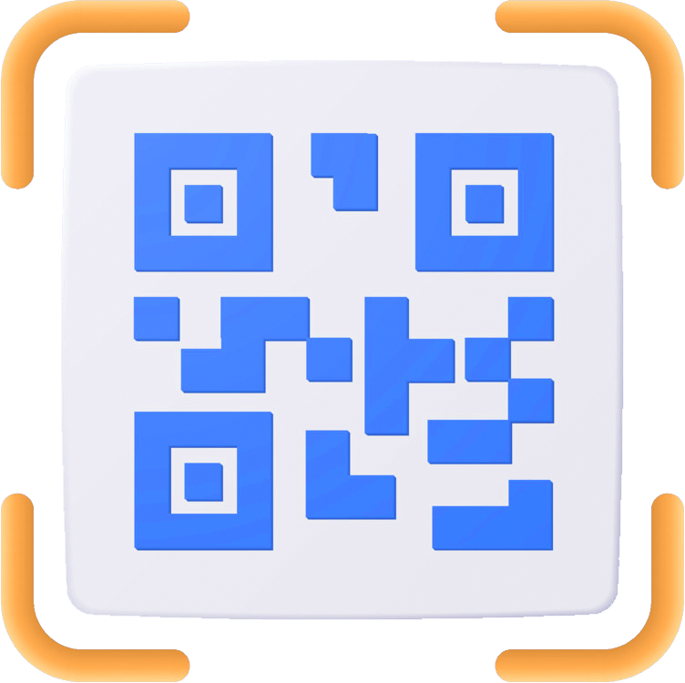
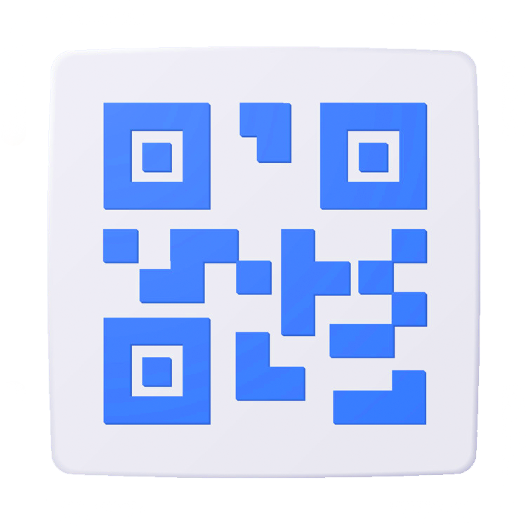

<app-header [showMenu]="true" title="Escanear pedidos"></app-header>


<ion-content class="ion-padding ion-text-center">

  <!-- Segmento para alternar entre "Scan QR" y "Generate QR" -->
  <ion-segment [(ngModel)]="segment" mode="ios">
    <!-- Botón de segmento para la funcionalidad de escaneo de códigos QR -->
    <ion-segment-button value="scan">
      <ion-label>Scan QR</ion-label>
    </ion-segment-button>

    <!-- Botón de segmento para la funcionalidad de generación de códigos QR -->
    <!--<ion-segment-button value="generate">
      <ion-label>Generate QR</ion-label>
    </ion-segment-button>-->
  </ion-segment>

  <!-- ========== Escanear QR ========== -->
  <!-- Contenedor que se muestra cuando el segmento activo es "scan" -->
  <div class="segment" *ngIf="segment === 'scan'">

    <div class="segment-content"></div>

    <!-- Imagen ilustrativa para el escaneo de códigos QR -->
    

    <!-- Etiqueta descriptiva para el usuario -->
    <h6 class="scan-label">Escanea o selecciona una imagen con Código QR para obtener su valor </h6>

    <ion-row>
      <!-- Botón para iniciar el escaneo del código QR con la cámara -->
      <ion-col size="6">
        <ion-button (click)="startScan()" class="submit" expand="block">
          Escáner
          <ion-icon slot="end" name="scan-outline"></ion-icon>
        </ion-button>
      </ion-col>

      <!-- Botón para seleccionar una imagen desde la galería y escanear su código QR -->
      <ion-col size="6">
        <ion-button (click)="readBarcodeFromImage()" class="submit" expand="block">
          Selecciona
          <ion-icon slot="end" name="image-outline"></ion-icon>
        </ion-button>
      </ion-col>
    </ion-row>

  </div>

  <!-- ========== Generar QR ========== -->
  <!-- Contenedor que se muestra cuando el segmento activo es "generate" -->
  <div class="segment" *ngIf="segment === 'ssssss'">
    <div class="segment-content">
      <div id="qrImage">
        <div class="d-flex-center">
          <div class="d-flex-center qr-wrapper">
            <!-- Genera un código QR dinámico si hay texto en `qrText` -->
            <qr-code *ngIf="qrText" [value]="qrText" size="190" errorCorrectionLevel="M"></qr-code>
            <!-- Imagen de marcador si no hay texto para generar el código QR -->
            
          </div>
        </div>
      </div>
      <!-- Área de texto para ingresar contenido que se convertirá en un código QR -->
      <ion-textarea 
        label="Escribe algo para convertir a codigo QR" 
        labelPlacement="stacked" 
        fill="outline"
        [(ngModel)]="qrText" 
        rows="4" 
        [autoGrow]="true">
      </ion-textarea>

      <!-- Botón para capturar la pantalla y compartir el código QR generado -->
      <ion-button (click)="captureScreen()" *ngIf="qrText" class="submit ion-margin-top" expand="block">
        Compartir
        <ion-icon slot="end" name="share-social-outline"> </ion-icon>
      </ion-button>
    </div>
  </div>
</ion-content>